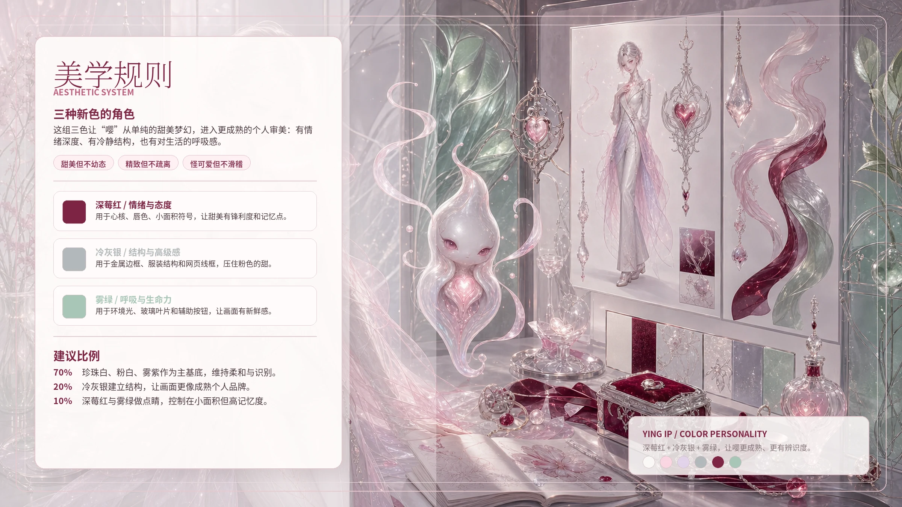
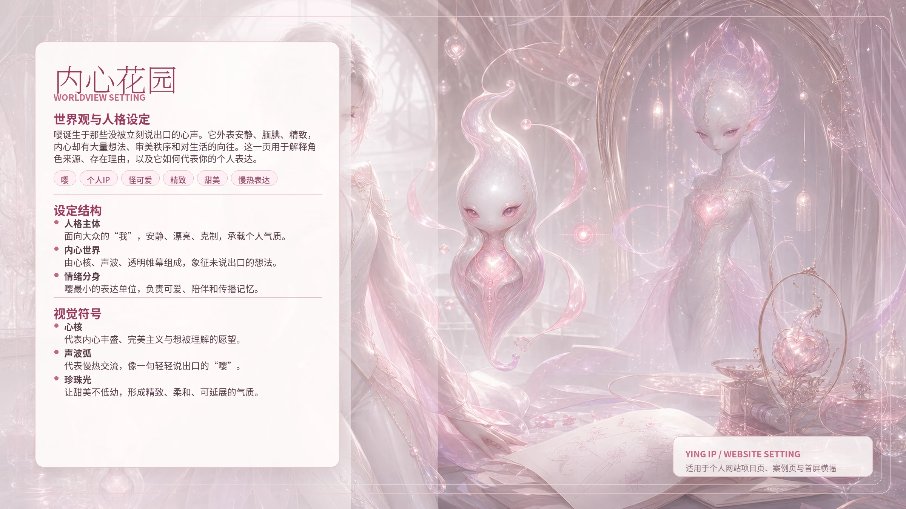
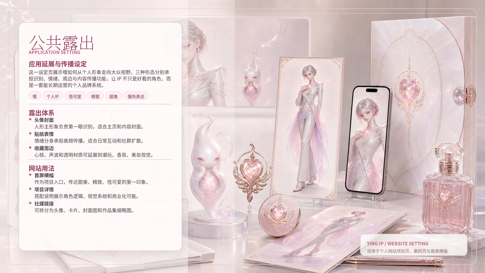

{kind=link}
主形象负责第一眼的个人识别，像你的审美门面。
ORIGINAL PERSONAL IP
嘤：把心声变成可被看见的个人表达。
一个外在安静、腼腆、精致，内心却充满想法、完美主义和表达欲的个人 IP。它不是单纯的甜美角色，而是一套可以进入个站、作品集和社媒传播的视觉系统。
3
形态系统
6
核心色彩
9
社媒发布卡
01 / CONCEPT
项目定位
不是“可爱角色”，而是你的个人审美分身。
“嘤”的核心矛盾来自外在与内心的反差：外在慢热、漂亮、安静，有一点距离感；内心完美、敏感、丰盛，想把自己的生活向往和审美想法分享给别人。
这套 IP 的任务，是让大众先被视觉吸引，再通过角色设定理解你：甜美但不幼态，精致但不疏离，怪可爱但不滑稽。
心核和声波代表没说出口的想法，也代表表达欲。
情绪分身负责高频露出，可以做表情、贴纸和周边。
02 / CHARACTER SYSTEM
三形态系统

精致人形版
作为个人 IP 的主形象，承担头像、封面、作品集和个站首屏里的第一识别。
高级精灵版
作为内心世界的高级形态，适合海报、展陈、潮玩和更艺术化的叙事。
情绪生物版
作为“想说但害羞”的符号分身，适合贴纸、表情包、小物和社媒互动。
03 / VISUAL SYSTEM
视觉规则

深莓红、冷灰银、雾绿，让甜美更像你。
深莓红
情绪与态度，用在心核、唇色、小面积符号。
冷灰银
结构与高级感，用在边框、线条和服装结构。
雾绿
呼吸与生命力，用在环境光和辅助视觉。
建议比例：70% 珍珠粉白基底，20% 冷灰银结构，10% 深莓红与雾绿点睛。
04 / WEBSITE MODULES
个站设定图

WORLDVIEW
内心花园
解释角色来源、人格设定和视觉符号，适合放在项目详情前半段。

APPLICATION
公共露出
展示头像、贴纸、周边、封面与网页露出，让 IP 从设定走向使用场景。
06 / ASSET INDEX
{kind=link}
{kind=link}
{kind=link}
05 / SOCIAL LAUNCH KIT
社媒发布包
发布定位
这一组内容用于第一次把“嘤”推到大众视野里。它不是只展示结果图，而是用九宫格讲清楚：角色是谁、为什么成立、视觉系统如何延展、它如何成为你的个人 IP。
我的个人 IP「嘤」：一个把没说出口的心声具象化的甜美怪可爱角色
嘤是我为自己设计的个人 IP。它外表安静、腼腆、精致，内心却有很多想法、完美主义和对生活的向往。我希望它不只是一个好看的角色，而是一套能代表我审美、表达方式和内容气质的个人视觉系统。